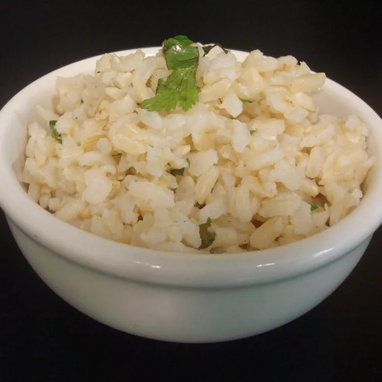

Copycat Chipotle Cilantro Lime Brown Rice

Description
This copycat Chipotle brown rice recipe is an upgrade to your conventional
(and, let's face it, plain) side dish of rice at dinner. Brown rice provides a nutritious,
fiber-packed alternative to white rice. And the cilantro and lime provide an extra dash of
delicious Mexican flavor.
Ingredients
- 4 cups water
- 2 cups brown rice
- 1 lime, juiced
- 1 teaspoon minced garlic
- 1 teaspoon extra-virgin olive oil
- 1 teaspoon sea salt
- ½; cup chopped fresh cilantro
Steps
-
Bring water and brown rice to a boil in a saucepan. Reduce heat to medium-low, cover, and simmer until rice
is tender and liquid has been absorbed, 30 to 45 minutes.
-
Transfer cooked rice to a large serving bowl and cool slightly, 5 to 7 minutes.
-
Whisk together lime juice, garlic, olive oil, and salt in a small bowl; stir into rice. Fold in cilantro.